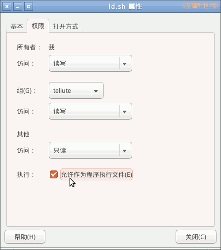
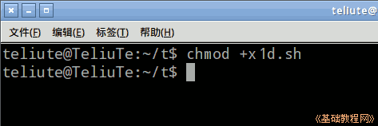

Bash Shell 脚本编程基础
作者：TeliuTe 来源：基础教程网
一、脚本文件 返回目录 下一课Shell 脚本文件是文本格式，类似于批处理文件，将一组命令集中起来，完成特定的功能；
1、文件格式
1）启动文本编辑器gedit，输入第一行 #!/bin/bash 按一下回车键换到第二行，这是头标识表示是脚本程序；
2）继续在第二行输入命令 date 然后按回车到下一行，这是显示当前日期时间的命令；
3）在第三行输入命令 cal ，这是显示日历的命令；
4）点菜单“文件－保存”命令保存文件，文件名为 1d.sh 后面的扩展名表示是脚本文件；
5）在文件管理器中，设置文件属性里权限，打勾可执行，或者在终端命令行执行 chmod +x 1d.sh；
 
6）按组合键Ctrl+Alt+T打开终端，运行命令 ./1d.sh 前面的点表示当前目录，需要进入到 1d.sh 所在的目录下；
7）输入命令按回车键后，显示出当前时间和本月的日历，下载本课范例；
本节学习了脚本文件格式的基础知识，如果你成功地完成了练习，请继续学习下一课内容；
本教程由TeliuTe制作|著作权所有
基础教程网：http://teliute.org/
美丽的校园……
转载和引用本站内容，请保留作者和本站链接。